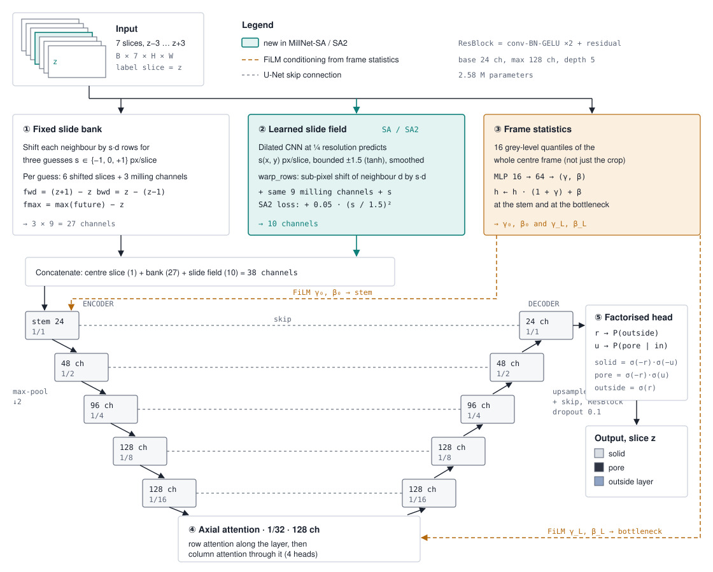
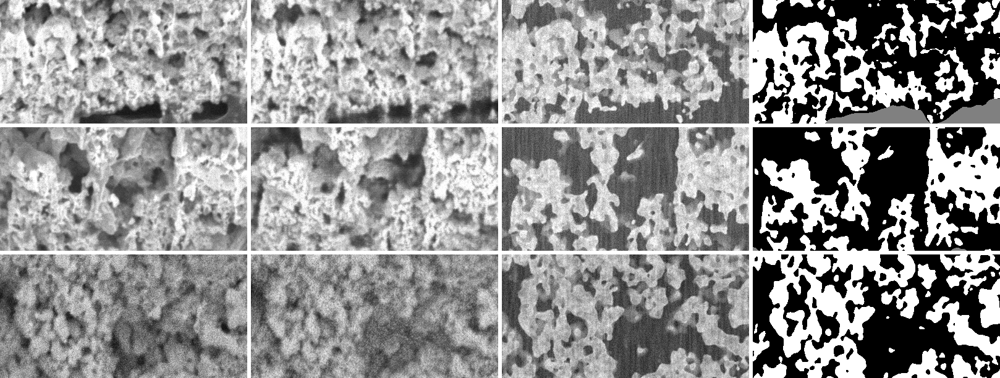

Final results on the four-annotator pFIB-SEM dataset (comp, uncomp, pristine; test slices 101–117). All models were chosen on validation slices only, and the test slices were scored once at the end. Mean IoU is over three classes: solid, pore and outside the catalyst layer.
| Model | comp | uncomp | pristine | Mean | Mean (bars start at 0.85) |
|---|
"Same budget" means 7,500 training steps, batch 6, 512 px crops, as for nnU-Net 2D. Standard budget: 3,000 steps, batch 8, 256 px. nnU-Net 3D stopped at epoch 25 of 30 after a power loss. Means ± standard deviation over 3 seeds where given.
Paired bootstrap over test slices (2,000 resamples). Each cell shows MillNet-SA2 minus nnU-Net 2D, with its 95 % confidence interval.
| Seed | comp | uncomp | pristine |
|---|---|---|---|
| 0 | −0.000 [−0.001, +0.002] | +0.025 [+0.024, +0.027] | +0.026 [+0.023, +0.028] |
| 1 | −0.000 [−0.002, +0.001] | +0.025 [+0.022, +0.027] | +0.025 [+0.022, +0.027] |
| 2 | −0.006 [−0.007, −0.004] | +0.021 [+0.018, +0.024] | +0.029 [+0.027, +0.031] |
uncomp and pristine: significantly better for every seed. comp: a tie for two seeds, slightly worse for one.

Each row removes or changes one part (standard budget). Seed-to-seed spread is about ±0.4 points, so smaller changes are noise.
| Variant | Mean mIoU | Change |
|---|---|---|
| MillNet, 3 seeds (reference) | 0.915 ± 0.004 | – |
| + learned slide field (MillNet-SA2, 3 seeds) | 0.916 ± 0.002 | +0.1 |
| Raw slices, no slide bank or milling features (3 seeds) | 0.917 ± 0.001 | +0.2 |
| Plain 3-class head instead of factorised head | 0.916 | +0.1 |
| No axial attention | 0.920 | +0.1 |
| 1 slice instead of 7 | 0.914 | −0.1 |
| 3 slices instead of 7 | 0.917 | +0.2 |
| No frame statistics | 0.898 | −1.7 |
| Everything removed (plain residual U-Net) | 0.882 | −3.3 |
Frame-level contrast conditioning is what matters; without it uncomp loses 3–5 points. The slide modules, milling features and multi-slice input are on par with simpler versions on this data. At the full training budget, MillNet with and without the learned slide field score 0.937 and 0.935.
Trained on two stacks, tested on the third.
| Unseen | MillNet-SA2 | U-Net R34 |
|---|---|---|
| comp | 0.843 | 0.863 |
| uncomp | 0.888 | 0.833 |
| pristine | 0.656 | 0.837 |
Label-free fixes (histogram matching, AdaBN) do not rescue pristine.
Cross-stack model fine-tuned on N labelled pristine slices.
| Slices | MillNet-SA2 | U-Net R34 |
|---|---|---|
| 0 | 0.656 | 0.837 |
| 2 | 0.913 | 0.915 |
| 5 | 0.937 | 0.910 |
| 10 | 0.934 | 0.914 |
Two labelled slices close most of the gap. Single seeds.
| Labels | MillNet-SA2 | nnU-Net | |
|---|---|---|---|
| Specific surface, comp (1/µm) | 16.19 | 16.96 | 17.68 |
| Specific surface, uncomp | 12.43 | 12.65 | 14.11 |
| Specific surface, pristine | 13.29 | 13.39 | 16.38 |
| Connected pores, comp | 0.941 | 0.957 | 0.731 |
| Porosity, comp / uncomp / pristine | 0.42 / 0.51 / 0.50 | 0.43 / 0.52 / 0.48 | 0.42 / 0.53 / 0.50 |
External porous-polymer FIB-SEM stacks.
| Method | Test mIoU |
|---|---|
| MillNet-SA2 (3 seeds) | 0.797 ± 0.002 |
| Skärberg et al. 2021, CNN | 0.798 |
| Röding et al. 2021, random forest | 0.762 |
Ties the published CNN without any tuning for this data.
Real stacks have no exact truth. The twin builds 3D structures with SliceGAN, trained on each acquisition's hand masks. It places shine-through along the measured slide, and a conditional GAN learns the microscope's appearance from our paired masks and images. Every twin image comes with its exact phase.

A real-trained model, scored on twin and real images of the same structure (test mIoU).
| Real | GAN twin | Physics twin | |
|---|---|---|---|
| comp | 0.915 | 0.913 | 0.779 |
| uncomp | 0.949 | 0.927 | 0.860 |
| pristine | 0.949 | 0.895 | 0.829 |
Pore IoU on the GAN twin, crops pasted into real frames.
| comp | uncomp | pristine | |
|---|---|---|---|
| MillNet-SA2 | 0.898 | 0.799 | 0.756 |
| U-Net ResNet-34 | 0.890 | 0.819 | 0.793 |
On exact truth, MillNet-SA2 is on par with a pretrained U-Net (mean 0.818 vs 0.834), not ahead as it is on the hand-annotated test set. Part of its lead may come from matching how the labels were made, with each frame judged on its own contrast. The twin is still imperfect for pristine, so this is indicative. Pretraining on the twin did not improve real-data accuracy (0.920 vs 0.919).